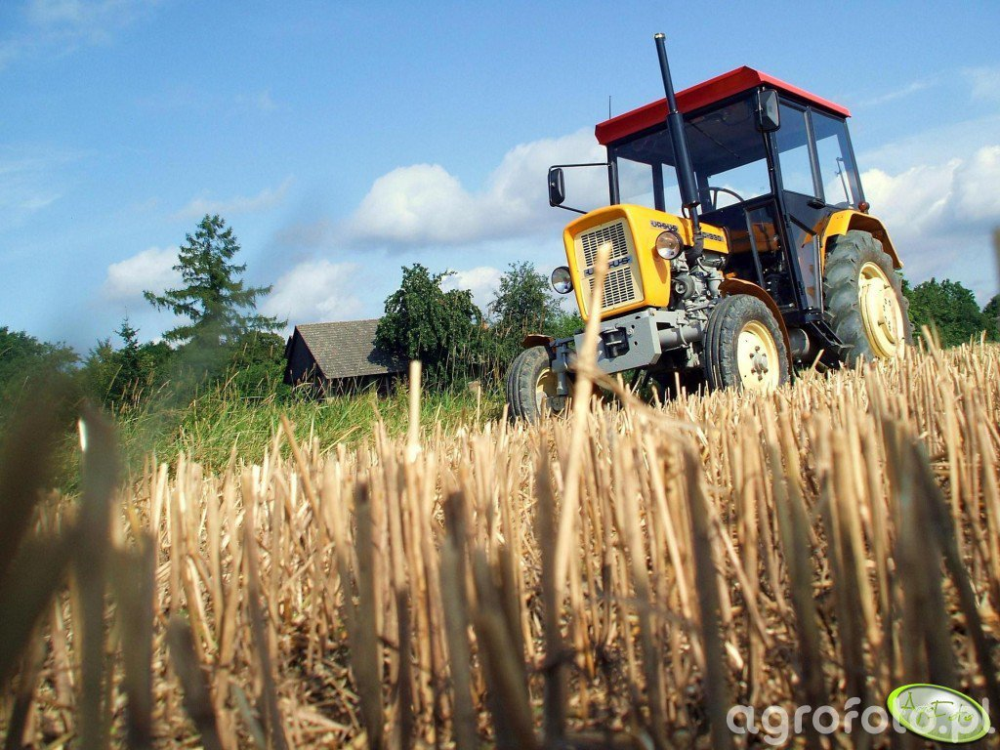

O marce URSUS
URSUS to ikona polskiej motoryzacji rolniczej, z historią sięgającą 1893 roku. Firma zasłynęła z produkcji wytrzymałych traktorów, które pracowały na polach całej Europy.
Historia
Początkowo zajmowała się produkcją armatury, później silników spalinowych, aż w końcu przeszła do legendarnych traktorów – jak C-330, C-360 i Ursus 912.
Produkty
URSUS produkuje nie tylko ciągniki, ale również maszyny komunalne i elektryczne pojazdy użytkowe.
